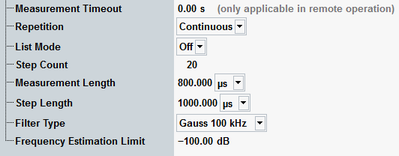

The parameters on the "Measurement Control" tab define how the R&S CMW acquires measurement data.

Defines a timeout for the IQ vs. slot measurement in remote operation. "0.00 s" means that the measurement never runs into a timeout. See detailed information in the remote command description.
Remote command:Defines how often the measurement is repeated if it is not stopped explicitly or by a failed limit check.
- Continuous: The measurement is continued until it is explicitly terminated. The results are periodically updated.
- Single-Shot: The measurement is stopped after one statistics cycle.
Single-shot is preferable if only a single measurement result is required under fixed conditions, which is typical for remote-controlled measurements. Continuous mode is suitable for monitoring the evolution of the measurement results in time and observe how they depend on the measurement configuration, which is typically done in manual control. The reset/preset values therefore differ from each other.
In the I/Q vs. slot measurement, the meaning of one statistics cycle depends on the "List Configuration Tab":
- With disabled list mode, the statistics cycle is equal to one subsweep comprising "Step Count" measurement steps.
- In list mode, the statistics cycle comprises the selected number of subsweeps.
See "List Mode".
Defines the number of measurement steps per subsweep, see "Power Steps and Subsweeps".
Note: The number of steps, i.e. the step count times the number of subsweeps (in list mode) must not exceed 3000. The R&S CMW auto-adjusts the settings if an excess step count or number of subsweeps is entered.
Sets the length of the averaging intervals that the R&S CMW uses to calculate the I/Q vs. slot results for each measurement step. The measurement data is acquired continuously, however, data outside the measurement length is discarded. The first evaluation interval starts immediately after the trigger event plus a possible "Trigger Offset" (for triggered measurements) or after the measurement is started ("Free Run" measurement).

Select a measurement length smaller than the actual width of the power steps to avoid the transients caused by the power steps of your input signal. A shortened first step or a trigger offset can shift the measurement length relative to the power steps, see "Power Steps and Subsweeps".
Remote command:Sets the time between the beginning of two consecutive measured power steps. If no gaps occur between the steps, set the step length to the length of each step. Together with the "Measurement Length", the step length determines the time intervals where the R&S CMW evaluates the acquired data.
Set the step length precisely in accordance with the properties of the input signal. An accurate setting is especially important if the R&S CMW measures many steps without a new trigger event, for example with a large "Step Count", see "Power Steps and Subsweeps". Inaccurate settings result in a drift of the evaluation intervals relative to the power steps of the input signal, so that eventually the power is measured across subsequent steps.
Remote command:Sets the type and bandwidth of the measurement filter (IF filter). The R&S CMW provides a filter of Gaussian shape and a Nyquist filter with 3-dB bandwidths of 100 kHz and 1 MHz. Due to its shorter settling time, the Gaussian filter is particularly suited for short step lengths.
Remote command:Defines a minimum average signal level for all measurement steps to be considered for the calculation of the average frequency per subsweep and the "Overall Frequency Error". The limit is defined in dB, relative to the "Expected Nominal Power" of each subsweep.
You can use the "Frequency Estimation Limit" to exclude steps where no signal is transmitted. Measurement steps below the "Frequency Estimation Limit" are still displayed with their measured I/Q amplitudes. However, a possible measurement inaccuracy does not affect the frequency correction and the "Overall Frequency Error".
See also description of the "Measurement Procedure".
Remote command: